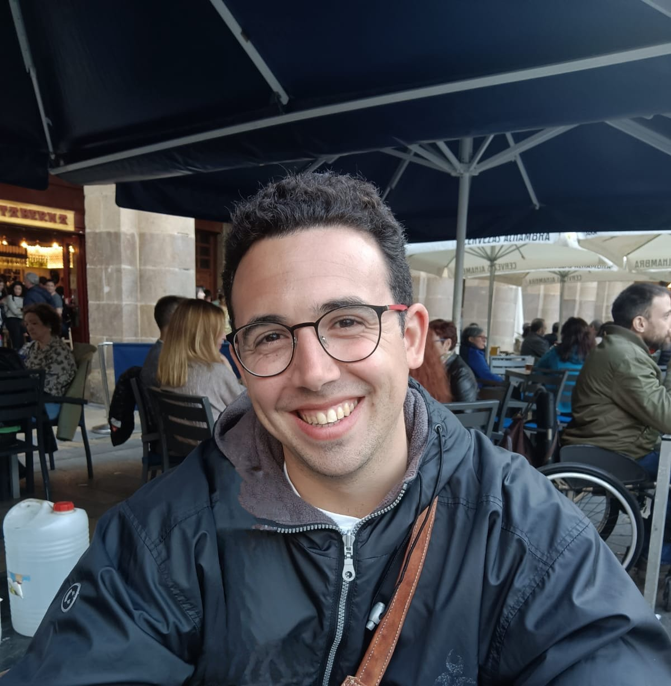

Mathematics · Differential geometry
José Luis
Carmona Jiménez
Postdoctoral researcher at IMAR
I study the interplay between connections and geometry, with a focus on homogeneous spaces, conformal structures and spinorial geometry.

Research & background
Geometry through connections.
My research lies in differential geometry, with particular emphasis on geometric structures, symmetry, conformal geometry, and linear connections. I investigate how geometrical properties in differential geometry can be detected and characterized through distinguished linear connections beyond the Levi-Civita framework. The guiding idea is that important global geometric properties are often encoded not directly by the metric, but by auxiliary connections whose curvature, torsion, and holonomy reveal hidden homogeneous or conformal structures. Examples of the connections I studied are Ambrose-Singer connections in homogeneous geometry or Weyl structures in conformal geometry.
Homogeneous geometry
Group and pseudo-group actions, invariant connections and Ambrose–Singer characterizations.
Conformal geometry
Weyl connections, curvature and holonomy beyond the Riemannian setting.
Spinorial geometry
Generalized imaginary Spin$^c$-Killing spinors, Kenmotsu manifolds and connections with torsion.
Latest updates
News
- I was awarded an Oberwolfach Leibniz Fellowship at the Mathematisches Forschungsinstitut Oberwolfach, Germany.
- I was awarded a Riemann Fellowship at Leibniz Universität Hannover, Germany.
- I was invited to give a talk at the workshop: HOPS in Bari 2026 — event details (opens in a new tab).
- We posted a new preprint: Kenmotsu manifolds and spin-c Killing spinors, now available on arXiv: 2608.19108 (opens in a new tab).
Publications & manuscripts
- J.L. Carmona Jiménez, A. Gil-García, C.S. Shahbazi. Kenmotsu manifolds and spin-c Killing spinors. Preprint (2026); arXiv: 2608.19108 (opens in a new tab).
- J.L. Carmona Jiménez. On generalized imaginary Spin$^c$-Killing spinors. Preprint (2026); arXiv: 2605.07813 (opens in a new tab).
- J.L. Carmona Jiménez. On Weyl structures reducible in the direction of the Lee form. Proceedings of the American Mathematical Society (2026); DOI: 10.1090/proc/17755 (opens in a new tab) · arXiv: 2507.17496 (opens in a new tab).
- J.L. Carmona Jiménez, M. Castrillón López, J.C. Díaz Ramos. The Ambrose-Singer theorem for cohomogeneity one Riemannian manifolds. Transformation Groups (2025); DOI: 10.1007/s00031-025-09927-x (opens in a new tab) · arXiv: 2312.16934 (opens in a new tab).
- J.L. Carmona Jiménez, M. Castrillón López. Canonical reductive decomposition of extrinsic homogeneous submanifolds. Note di Matematica (2025); DOI: 10.1285/i15900932v45s1p117 (opens in a new tab) · arXiv: 2506.05580 (opens in a new tab).
- J.L. Carmona Jiménez, M. Castrillón López. The Ambrose–Singer theorem for general homogeneous manifolds with applications to symplectic geometry. Mediterranean Journal of Mathematics, 19, 280 (2022); DOI: 10.1007/s00009-022-02197-x (opens in a new tab) · arXiv: 2001.06254 (opens in a new tab).
- J.L. Carmona Jiménez, M. Castrillón López. The homogeneous holonomies of complex hyperbolic space. Annals of Global Analysis and Geometry, 62 (2022); DOI: 10.1007/s10455-022-09852-2 (opens in a new tab) · arXiv: 2112.05453 (opens in a new tab).
- J.L. Carmona Jiménez, M. Castrillón López. Reduction of homogeneous pseudo-Kähler structures by one-dimensional fibers. Axioms, 9(3), 94 (2020); DOI: 10.3390/axioms9030094 (opens in a new tab).